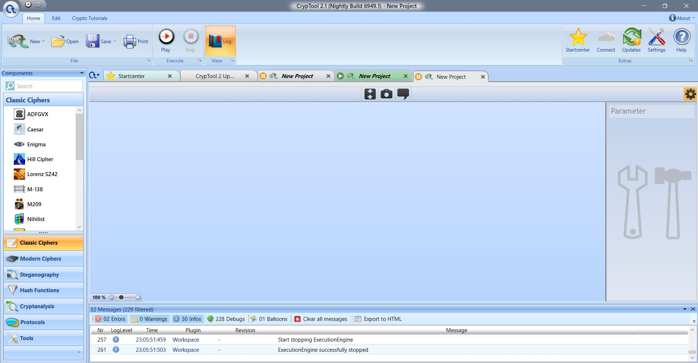
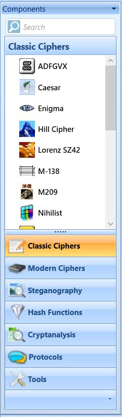
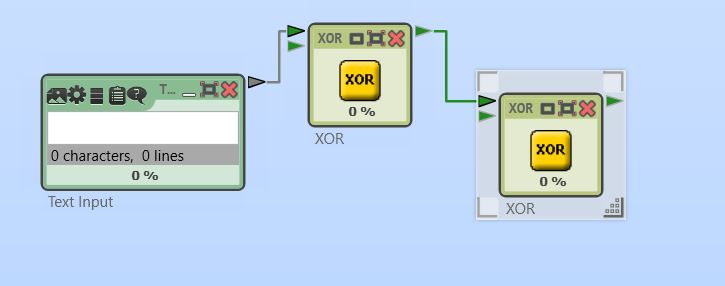
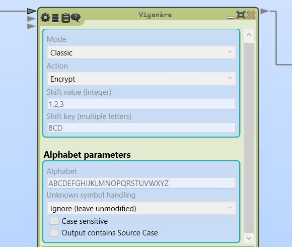

CrypTool
About the software
CrypTool is one of the most popular open source application for learning cryptology. The author of the software is Bernhard Esslinger with other researchers from Universities of Technology from Darmstadt, Duisberg-Essen, Kassel and Siegen. It is available for all: Windows, Macintosh and Linux operating systems.
The first version of the program CrypToo1 1 was released on 1998 which supported big amount of cryptography systems.
After 7 years of development process next version of CrypTool − CrypTool 2 released. It has got modern GUI which visualise the workflow of encryption process. At the same time 2 other projects were finalised:
-
CrypTool JCT − application dedicated for UNIX operating systems
-
CrypTool Online − internet application with similar functionality as other CrypTool projects
Presentation of GUI
At the first sight CrypTool 2 looks like a software for image processing. 

We have got huge main workspace and two toolbars.
There are many available ciphers we can use with CypTool 2. We have got classic ciphers as well as examples of modern ciphers.
Moreover we can try how the hash functions work in practice, we can use some of attack on the ciphers from "cryptoanalysis" option and see some popular protocols. The amount of options which the software provides is really impressing.
There are also lots of options connected with each available cipher, we can set and change all possible coefficients and options related with cryptography methods. It is perfect tool for learning and analysing the cipher.
Wery important part of the software is the console at the bottom of the window. It inform us about the build, warning and errors of our project.
How to use it?
In the newest version we are creating the whole workflow with special blocks of tasks. The more complicated the cipher is the longer the path and more block we have to create. We are modifying the cipher by setting appropriate options within each block.

We do noot have to limit ourselves just to one cryptography method. We can bind few different cryptography methods, so our input text may be converted by more than one cipher method.
Practical example − CrypTool 2
I will present how the software works on one of the easiest and well known cipher - Vigenere Cipher.
Let us start with a main blck which will be responsible for ciphering the text.

We choose if we want to encrypt or decrypt the text, then we are able to choose the keyword using numerical or alphebetical shift. In this cipher we can also set base alphabet, case snsitivity and way of handling special characters.
When we are ready we can add two missing blocks − input and output.
My opinion
CrypTool 2 is very professional and complex software, the idea of using block is great however for users who have no theoretical background it may be hard to use. Even with this nice grafical interface its predecessor was from my point of view more user friendly.
But if we use both CrypTool 2 and online version of the application where we can find theory about the ciphers it becomes very powerfull learning tool.